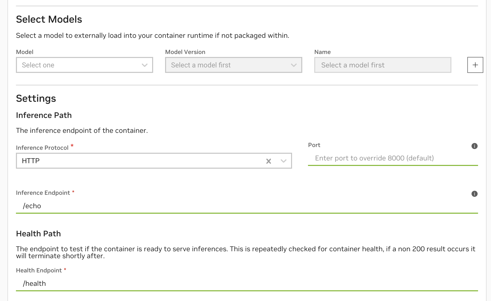
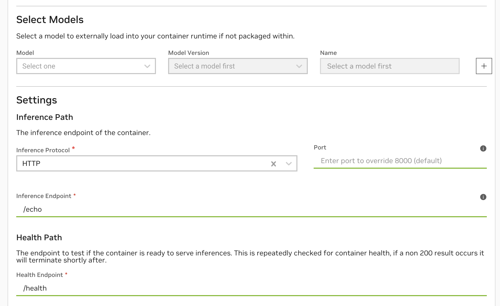

Quickstart
This guide gives an end-to-end workflow of how to create and deploy a container-based function on Cloud Functions, using the fastapi_echo_sample container. This is a minimal server that’s been configured to work with Cloud Functions, echoing whatever is sent to its inference endpoint.
Before beginning, ensure that you have created an NGC Personal API Key and authenticated with the NGC Docker Registry.
Clone, Build and Push the Docker Image to NGC Private Registry
First clone and build the docker image.
1> git clone https://github.com/NVIDIA/nv-cloud-function-helpers.git
2> cd nv-cloud-function-helpers/examples/fastapi_echo_sample
3> docker build . -t fastapi_echo_sample
Now tag and push the docker image to the NGC Private Registry.
1> docker tag fastapi_echo_sample:latest nvcr.io/$ORG_NAME/fastapi_echo_sample:latest
2> docker push nvcr.io/$ORG_NAME/fastapi_echo_sample:latest
Once this finishes, you’ll now be able to see the new container in the NGC Private Registry Containers Page and it will be available for use in function creation.
Create & Deploy the Function Using the Cloud Functions UI
Navigate to the Cloud Functions UI and choose “Create Function”, then “Custom Container”. Enter the details for the
fastapi_echo_sample. In this container, the inference endpoint is/echo, the health endpoint is/healthand it exposes these on the default8000port. No other configuration changes are needed.
 

Once created, the function will show up in the Functions List Page with the status
INACTIVEbecause it is not yet deployed. By default, a function ID and function version ID is generated every time you create a new function or new function version.

Deploy the function by clicking the kebab menu on the right of the function row.
Create & Deploy the Function Using the Cloud Functions API
Ensure you have an API key created, see Generate an NGC Personal API Key.
Find your NGC organization name within the NGC Organization Profile Page. This is not the Display Name. For example:
qdrlnbkss123.Create the function via API by running the following curl with an
$API_KEYand your$ORG_NAME.
1 curl --location 'https://api.ngc.nvidia.com/v2/nvcf/functions' \
2 --header 'Content-Type: application/json' \
3 --header 'Accept: application/json' \
4 --header 'Authorization: Bearer $API_KEY' \
5 --data '{
6 "name": "my-echo-function",
7 "inferenceUrl": "/echo",
8 "healthUri": "/health",
9 "inferencePort": 8000,
10 "containerImage": "nvcr.io/$ORG_NAME/fastapi_echo_sample:latest"
11 }'
It will return a function ID listed as id and a function version ID listed as versionId.
List functions you’ve created via API using the following curl:
1 curl --location 'https://api.ngc.nvidia.com/v2/nvcf/functions?visibility=private' \
2 --header 'Accept: application/json' \
3 --header 'Authorization: Bearer $API_KEY' \
Deploy the function via API using the following curl:
1 curl --location 'https://api.ngc.nvidia.com/v2/nvcf/deployments/functions/$FUNCTION_ID/versions/$FUNCTION_VERSION_ID' \
2 --header 'Content-Type: application/json' \
3 --header 'Accept: application/json' \
4 --header 'Authorization: Bearer $API_KEY' \
5 --data '{
6 "deploymentSpecifications": [
7 {
8 "backend": "GFN",
9 "gpu": "L40G",
10 "maxInstances": "1",
11 "minInstances": "1"
12 }
13 ]
14 }'
Refer to the OpenAPI Specification for further API documentation.
Create & Deploy the Function Using the NGC CLI
Ensure you have an API key created, see Generate an NGC Personal API Key.
Ensure you have the NGC CLI configured.
Run the following command to create the function, it will return a function ID and function version ID.
1 ngc cf function create --health-uri /health --inference-port 8000 --container-image nvcr.io/$ORG_NAME/fastapi_echo_sample:latest --name my-echo-function --inference-url /echo
List functions you’ve created using the following command:
1 ngc cf function list --access-filter=private
Deploy the function using the following command:
1 ngc cf function deploy create --deployment-specification GFN:L40:gl40_1.br20_2xlarge:1:1 $FUNCTION_ID:$FUNCTION_VERSION_ID
See NGC CLI Documentation. for further commands.
Invoke the Function
Once your function is deployed, invoke its inference endpoint with the following curl:
1 curl --location 'https://api.nvcf.nvidia.com/v2/nvcf/pexec/functions/$FUNCTION_ID' \
2 --header 'Content-Type: application/json' \
3 --header 'Authorization: Bearer $API_KEY' \
4 --data '{
5 "message": "hello world"
6 }'